Errors Are Values
panic for bugs. Result for the world. errors are data you handle.
panic!
Book · §9.1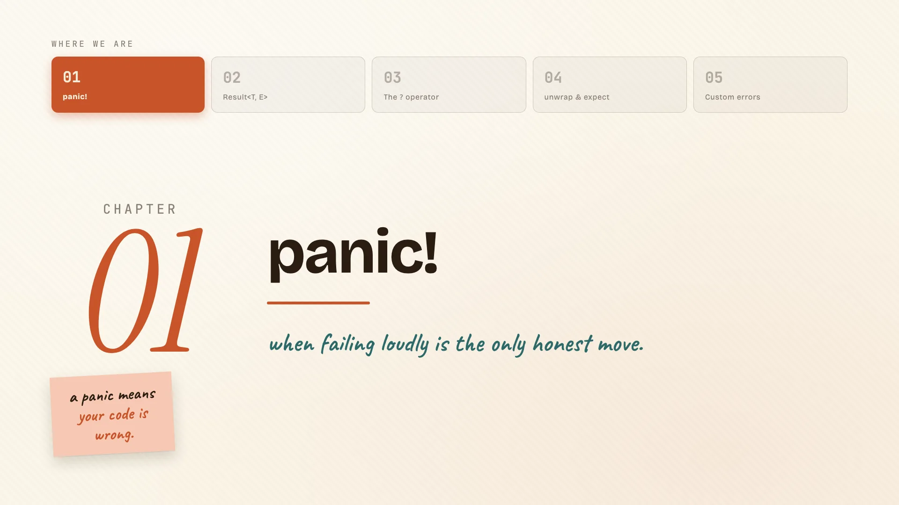
When failing loudly is the only honest move. A panic means your code is wrong.
Two kinds of failure
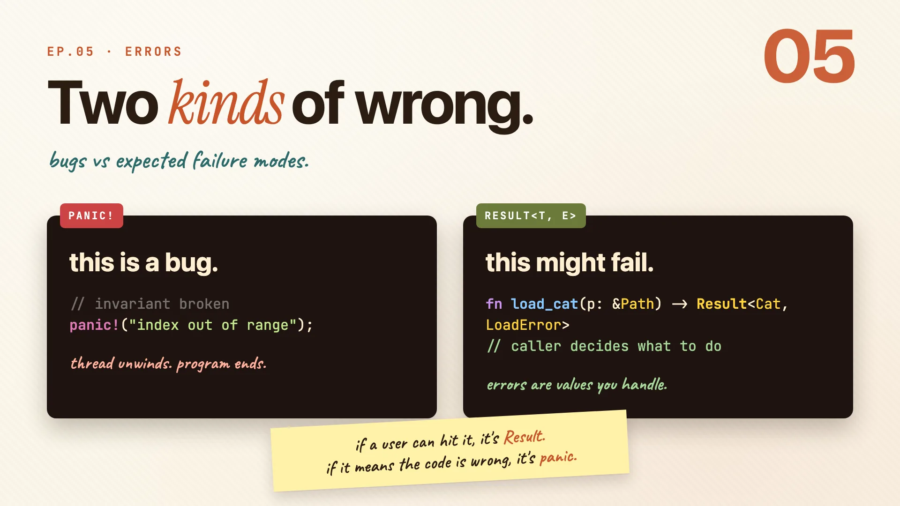
Rust splits failure into two kinds, and which one you pick is the whole skill.
panic!means the code is wrong. You indexed past the end, or unwrapped aNone. The thread unwinds and the program stops. There's nothing to recover, the bug is yours to fix.Result<T, E>means something might fail for a reason you expected. A file might not open, text might not parse. That's not a bug, that's the world. Rust hands you the failure as a value and lets you decide.
panic!("index out of range")
fn load_cat(p: &Path) -> Result<Cat, LoadError>
// caller decides what to do
Remember: if a user can hit it, it's Result. if it means the code is wrong, it's panic.
What triggers a panic
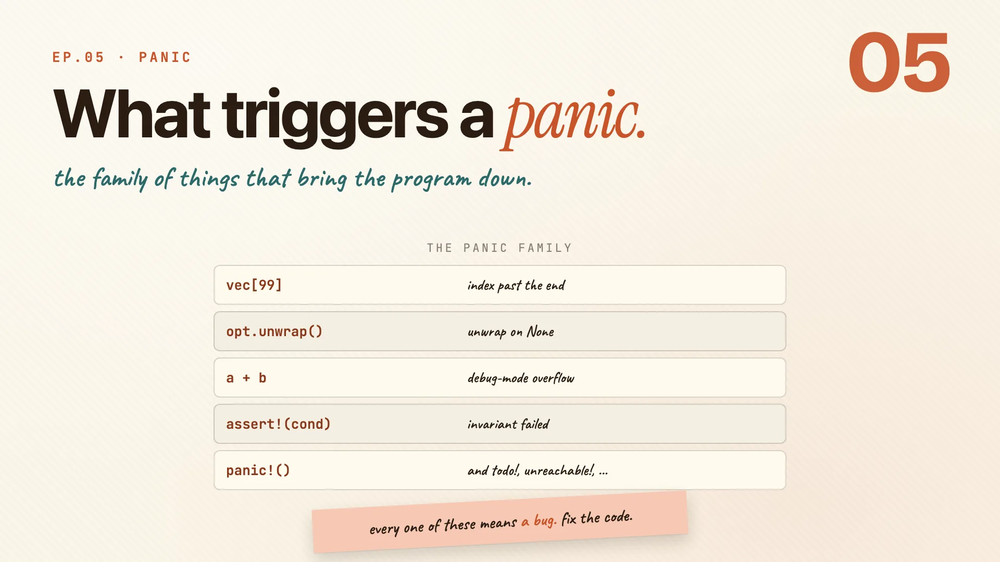
A handful of things fire a panic, and they're worth knowing on sight:
vec[99] // index past the end
opt.unwrap() // unwrap on None
a + b // debug-mode overflow
assert!(cond) // invariant failed
panic!() // and todo!, unimplemented!, unreachable!
Every one of these means the code is wrong. There's nothing to catch, there's something to fix.
Remember: every one of these means a bug. fix the code.
When a panic fires
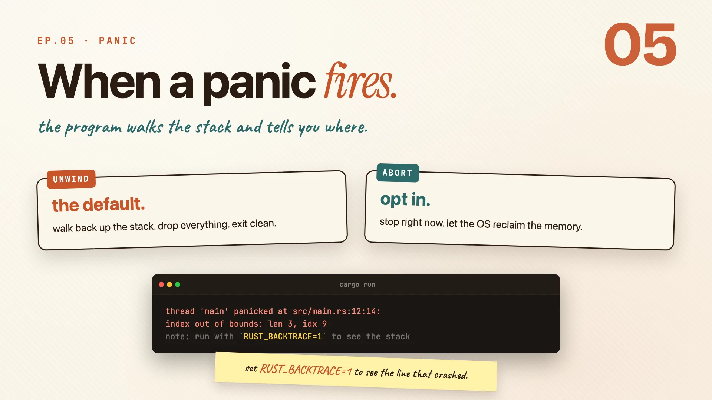
A panic can wind the program down two ways:
- Unwind (the default). Walk back up the stack, run every destructor, exit cleanly.
- Abort (opt in). Stop immediately and let the OS reclaim the memory. It's a build setting, covered in the Cargo episode.
When a panic prints, it points at the line and tells you to set a backtrace:
src/main.rs:12:14
index out of bounds: len 3, idx 9
note: run with RUST_BACKTRACE=1 to see the stack
Do that, and you get the full chain of calls that led to the crash. Usually how you find the line that's actually wrong.
Remember: set
RUST_BACKTRACE=1to see the line that crashed.
When a panic is right
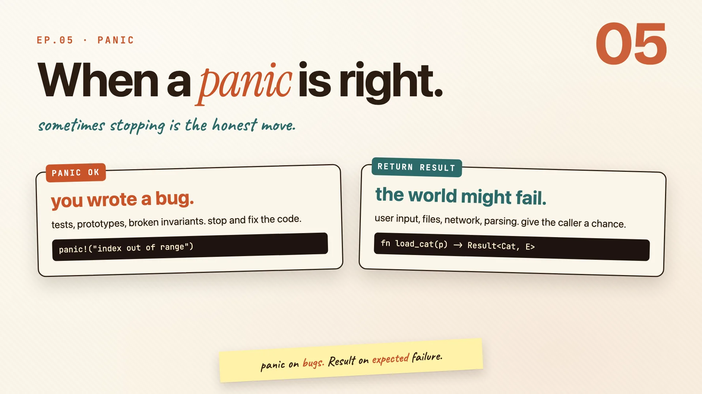
A panic is the right call more often than you'd think.
| Panic is OK | Return a Result |
|---|---|
| you wrote a bug | the world might fail |
| prototypes, tests, broken invariants | user input, files, network, parsing |
| stop and fix the code | give the caller a chance |
Anywhere outside code you control, a user, a file, a network, return a Result.
Remember: panic on bugs. Result on expected failure.
The newtype trick
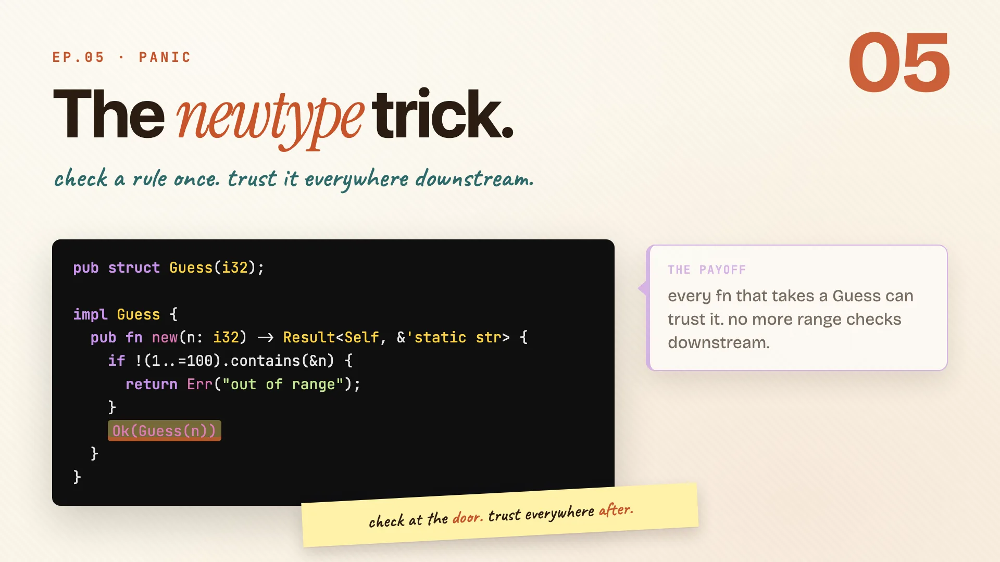
Here's a place panics belong: enforcing your own rules. Wrap a value in a tiny type, and make the only way to build it go through a checked constructor:
pub struct Guess(i32);
impl Guess {
pub fn new(n: i32) -> Result<Self, &'static str> {
if !(1..=100).contains(&n) {
return Err("out of range");
}
Ok(Guess(n))
}
}
- The only way to make a
Guessisnew, which returns aResult, so a bad value can't construct one. - You check the rule once. Every function downstream that takes a
Guesscan trust it. No more range checks scattered around.
Remember: check at the door. trust everywhere after.
Result<T, E>
Book · §9.2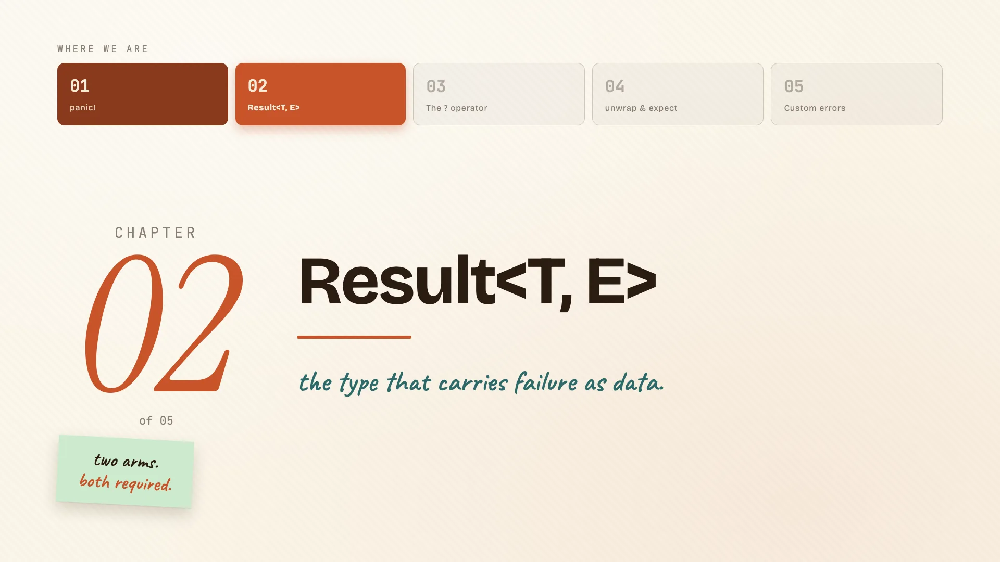
The type that carries failure as data. Two arms, both required.
Reading a Result
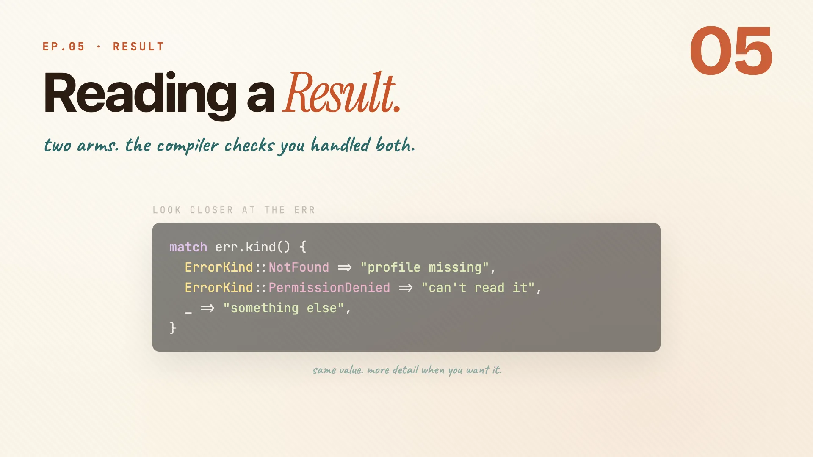
Result is an enum with two variants, and the compiler makes you handle both:
enum Result<T, E> { Ok(T), Err(E) }
match load_cat(path) {
Ok(cat) => greet(&cat),
Err(e) => log(e),
}
Ok(T)holds the value you wanted (here, aCat).Err(E)holds the error (aLoadError).- If you only handle the happy path, the code doesn't compile. The failure is right there in the type, impossible to ignore.
You can look closer at an error too, matching on its kind:
match err.kind() {
ErrorKind::NotFound => ...,
ErrorKind::PermissionDenied => ...,
_ => ...,
}
Remember: two arms, both required. the compiler checks you handled both.
Handle it without match
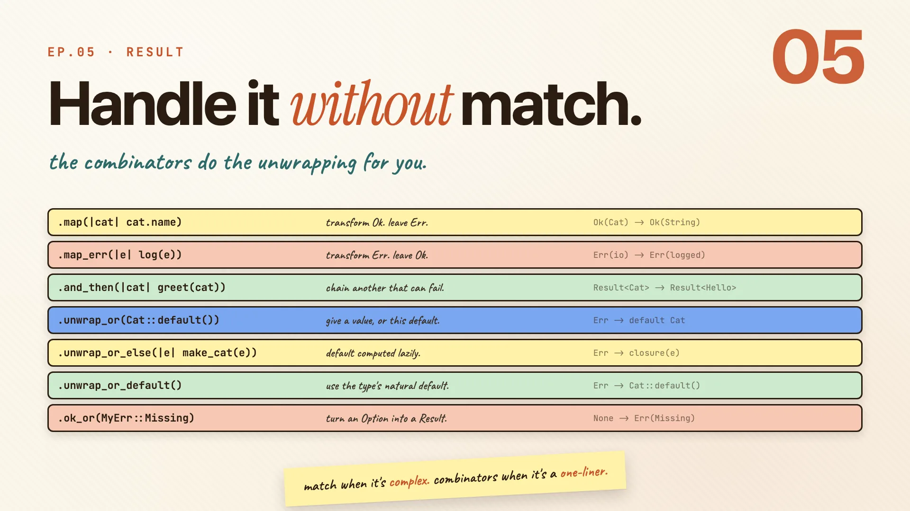
Matching every time gets noisy. Result comes with shortcuts:
| Method | What it does |
|---|---|
.map(f) |
transform Ok, leave Err |
.map_err(f) |
transform Err, leave Ok |
.and_then(f) |
chain another step that can fail |
.unwrap_or(v) |
a value if it's Err |
.unwrap_or_else(f) |
default computed lazily |
.unwrap_or_default() |
the type's natural default |
.ok_or(e) |
turn an Option into a Result |
Reach for these when the logic is a one-liner. Reach for match when it isn't.
Remember: match when it's complex. combinators when it's a one-liner.
Option vs Result
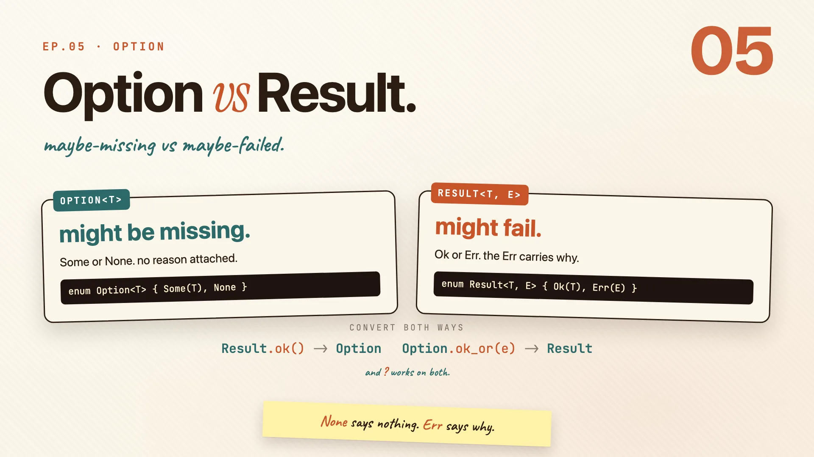
Both say "this might not be a plain value." The difference is whether you care why.
Option<T> |
Result<T, E> |
|
|---|---|---|
| variants | Some / None |
Ok / Err |
| models | might be missing | might fail |
| the bad case | says nothing | carries a reason |
You can move between them, and ? works on both:
result.ok() // Result -> Option (drop the error)
option.ok_or(e) // Option -> Result (supply an error)
Remember: None says nothing. Err says why.
The ? operator
Book · §9.2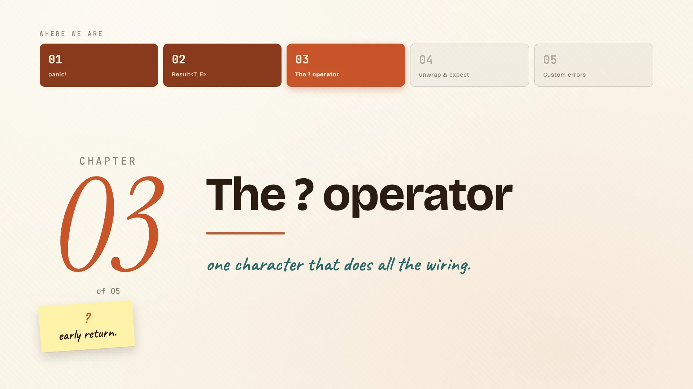
One character that does all the wiring.
The ? operator
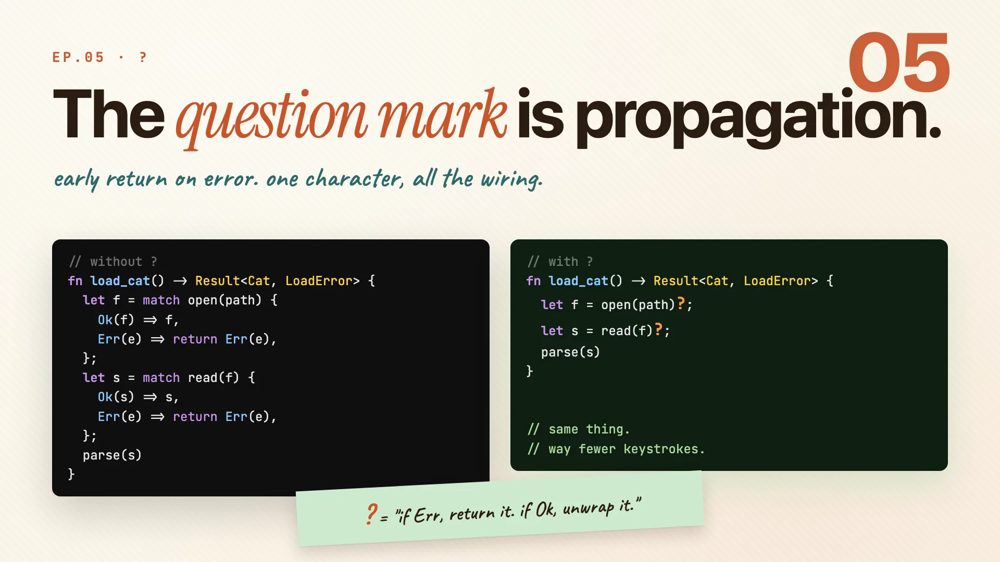
Propagating errors by hand is exhausting: match, return, repeat on every call.
// without ?
fn load_cat() -> Result<Cat, LoadError> {
let f = match open(path) {
Ok(f) => f,
Err(e) => return Err(e),
};
let s = match read(f) {
Ok(s) => s,
Err(e) => return Err(e),
};
parse(s)
}
The ? operator collapses all of it:
// with ?
fn load_cat() -> Result<Cat, LoadError> {
let f = open(path)?;
let s = read(f)?;
parse(s)
}
Put ? after a call that returns a Result. If it's Ok, you get the value. If it's Err, the function returns that error right there.
Remember:
?= if Err, return it. if Ok, unwrap it.
What ? really does
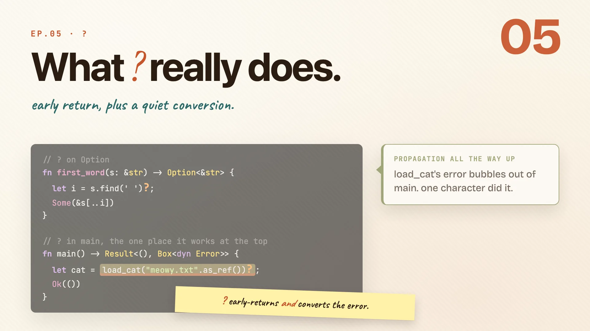
The ? is two things: an early return, plus a quiet conversion.
// you write
let f = open(path)?;
// it expands to
match open(path) {
Ok(v) => v,
Err(e) => return Err(e.into()),
}
- On the way out, it calls
Fromto convert the error. Anio::Erroror aParseIntErrorbecomes yourLoadError, so one return type unifies many error sources. ?works onOptiontoo:Noneshort-circuits likeErr.- It works in
main, ifmainreturns aResult:
fn main() -> Result<(), Box<dyn Error>> {
let cat = load_cat("meowy.txt".as_ref())?;
Ok(())
}
Remember:
?early-returns and converts the error.
unwrap and expect
Book · §9.3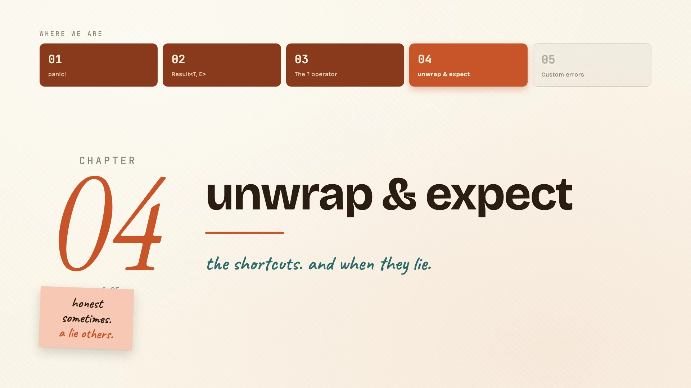
The shortcuts. And when they lie.
The escape hatches
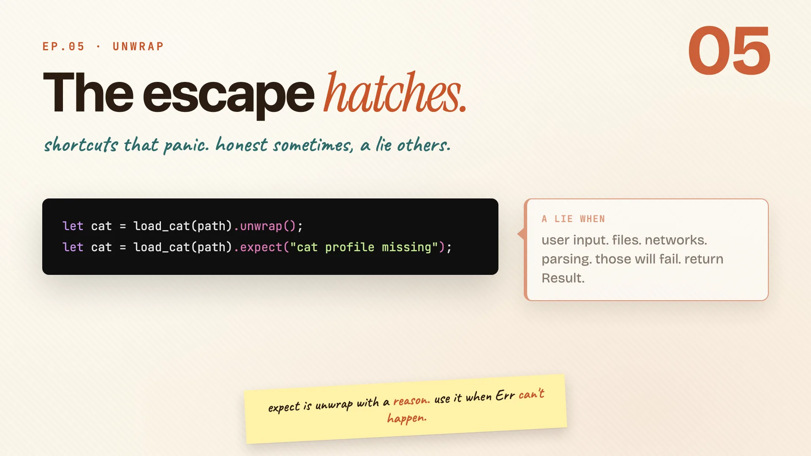
let cat = load_cat(path).unwrap();
let cat = load_cat(path).expect("cat profile missing");
unwrapgives the value, or panics with no context.expectdoes the same but with a message you wrote. Always prefer it, the reason is what saves you later.
| Honest when | A lie when |
|---|---|
| prototypes, tests | user input, files |
cases where Err truly can't happen |
networks, parsing |
unwrap on a file the user chose isn't a shortcut, it's a crash waiting for a bad day. Return a Result.
Remember:
expectisunwrapwith a reason. use it whenErrcan't happen.
Custom errors
Book · §9.2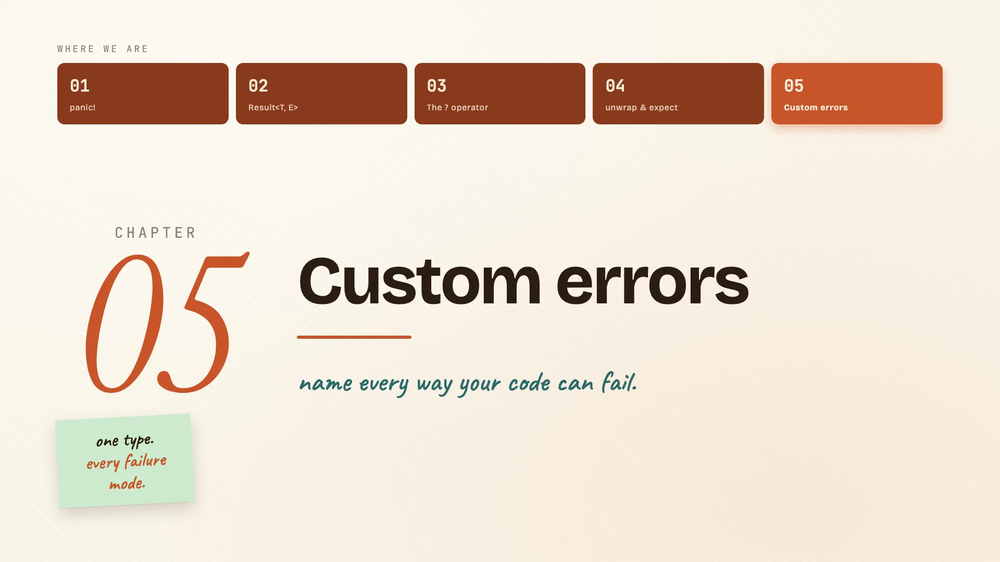
Name every way your code can fail. One type, every failure mode.
Roll your own
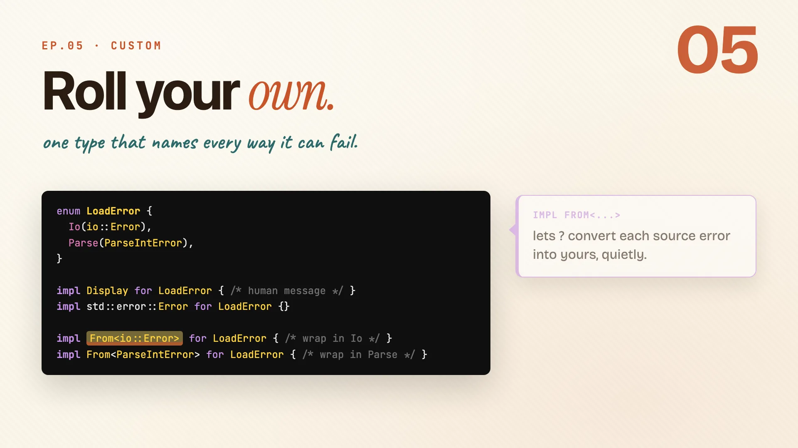
Once a function can fail more than one way, make one enum that names each:
enum LoadError {
Io(io::Error),
Parse(ParseIntError),
}
impl Display for LoadError { /* human message */ }
impl std::error::Error for LoadError {}
impl From<io::Error> for LoadError { /* ... */ }
impl From<ParseIntError> for LoadError { /* ... */ }
- One variant per failure mode (here: the file I/O, and the parse).
Displayis the human-readable message callers see.Errorlets your type slot into the rest of the ecosystem.Fromis the piece that makes?work: it converts each underlying error into yours, automatically.
Remember: one type. every failure mode.
Frommakes?convert.
Let the crate write it
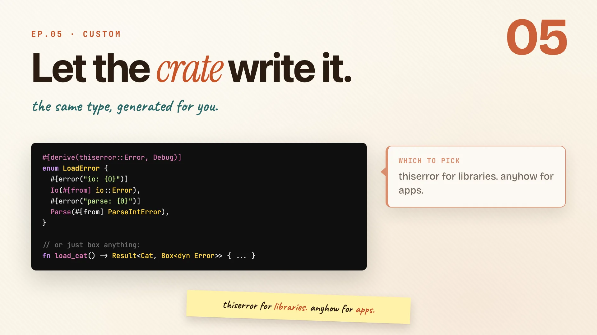
Writing Display and From by hand gets repetitive, so most people reach for a crate:
#[derive(thiserror::Error, Debug)]
enum LoadError {
#[error("io: {0}")]
Io(#[from] io::Error),
#[error("parse: {0}")]
Parse(#[from] ParseIntError),
}
// or just box anything:
fn load_cat() -> Result<Cat, Box<dyn Error>> { ... }
thiserrorgeneratesDisplayandFromfrom one derive, plus a message string and#[from]per variant.Box<dyn Error>is the quick path: any error flows up, but callers lose the ability to match on specifics.
The rule most people settle on: thiserror for libraries (callers want to match your variants), anyhow for applications (you just want errors to bubble up with context).
Remember: thiserror for libraries. anyhow for apps.
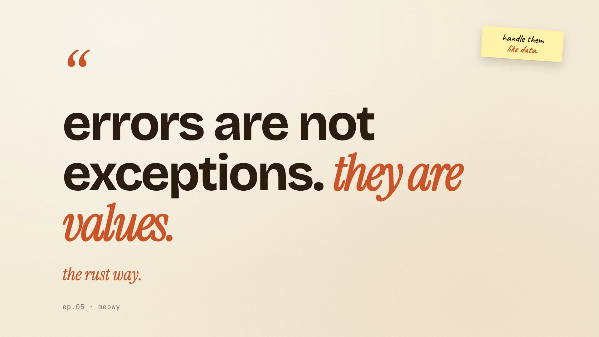
The one idea to keep:
Errors are not exceptions. They are values. Handle them like data.
Cheatsheet recap
One line per idea, in order. Skim this when you just need the reminder.
| Idea | Remember |
|---|---|
| Two kinds of failure | if a user can hit it, it's Result. if it means the code is wrong, it's panic. |
| What triggers a panic | every one of these means a bug. fix the code. |
| When a panic fires | set RUST_BACKTRACE=1 to see the line that crashed. |
| When a panic is right | panic on bugs. Result on expected failure. |
| The newtype trick | check at the door. trust everywhere after. |
| Reading a Result | two arms, both required. the compiler checks you handled both. |
| Handle it without match | match when it's complex. combinators when it's a one-liner. |
| Option vs Result | None says nothing. Err says why. |
| The ? operator | ? = if Err, return it. if Ok, unwrap it. |
| What ? really does | ? early-returns and converts the error. |
| The escape hatches | expect is unwrap with a reason. use it when Err can't happen. |
| Roll your own | one type. every failure mode. From makes ? convert. |
| Let the crate write it | thiserror for libraries. anyhow for apps. |
Practice: Rustlings
13_error_handling, 23_conversions.